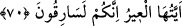

dışlarından içleri görülür. Bu odalarda hiçbir gözün görmediği, hiçbir kulağın
duymadığı, hiçbir insanın aklına-hayaline gelmeyecek nimetler, lezzetler ve sevinçler
vardır.”
Câbir (r.a.) diyor ki:
“Bu odalar kimlere âiddir, yâ Rasûlallah!” diye sordum.
Şöyle cevap verdi:
“Selâmı yayan, yemek yediren, oruca devam eden ve herkes uyurken gece namazı
kılanların olacaktır.”[72]
“Onların yaptıklarına üzülme!” ifadesinde, Allah’ın kıskançların tuzaklarını iyi sona
ulaştırmayacağına, aksine ilâhî yardımın ve rabbânî desteğin sâlihlerle berâber
olduğuna işaret vardır. İşte bu sebeple Hz. Peygamber (s.a.) mağara arkadaşına:
“Üzülme, çünkü Allah bizimle beraberdir!” (et-Tevbe, 9/40) buyurmuştur.
Görüldüğü üzere Yâkub’un oğulları gerek Yûsuf’a gerekse kardeşine kıskançlık
besleyerek eziyet etmişler, fakat emellerine nâil olamamışlardır. Aksine Allah Teâlâ bir
süre sonra da olsa iki kardeşi bir araya getirmiş, yine Yâkub (a.s.)’la Yûsuf (a.s.)’ı
birbirine kavuşturmuştur.
70. (Yûsuf) onların yükünü hazırladığı zaman su tasını kardeşinin yükünün içine
koydu. (Kafile hareket ettikten) sonra bir tellal: “Ey kafile! Siz hırsızsınız!” diye
seslendi.
Yûsuf “onların yükünü hazırladığı zaman su tasını kardeşinin” Bünyamin’in
“yükünün içine koydu.”
“ /yük ” metâ, mal demektir. Metâ ise kendisinden fayda sağlanan her şeydir.
Yâni Yûsuf (a.s.) ölçeklerini ölçtürüp kardeşlerinden her birine bir deve yükü verdi.
Yolculukları sırasında ihtiyaç duyacakları azıklarını da hazırlattı.
el-Kısas’ta şöyle geçer: Yûsuf (a.s.) kardeşlerine “Babanıza hemen dönmek ister
misiniz?” diye sorunca kardeşleri: “Elbette” dediler. Bunun üzerine ölçek işlerine
bakan görevliye yiyeceklerini ölçmesini emredip: “Bir deve yükü de fazladan ver!”
dedi. Sonra yüklerini en güzel şekilde hazırlattı ve yola çıkmalarını emretti.
Rivâyete göre Yûsuf (a.s.) kendisini kardeşi Bünyamin’e tanıtınca Bünyamin’in aklı
başından gitti. Sonra kendine gelince Yûsuf’un boynuna sarıldı. Hâl lisânıyla ona şöyle
dedi: